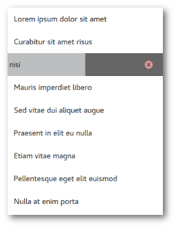

Qt Quick Controls - Swipe to Remove
Demonstrates removal of list items by swipe gesture.
This example demonstrates how SwipeDelegate can be used to implement removal of list items by swiping. This UI pattern is often used in touch user interfaces.

Each list item can be swiped to the left, which reveals a label on the right side indicating that the item will be removed if the swipe is completed. The following snippet contains the implementation of the side item.
swipe.right: Rectangle { width: parent.width height: parent.height clip: true color: SwipeDelegate.pressed ? "#555" : "#666" Label { font.family: "Fontello" text: delegate.swipe.complete ? "\ue805" // icon-cw-circled : "\ue801" // icon-cancel-circled-1 padding: 20 anchors.fill: parent horizontalAlignment: Qt.AlignRight verticalAlignment: Qt.AlignVCenter opacity: 2 * -delegate.swipe.position color: Material.color(delegate.swipe.complete ? Material.Green : Material.Red, Material.Shade200) Behavior on color { ColorAnimation { } } } Label { text: qsTr("Removed") color: "white" padding: 20 anchors.fill: parent horizontalAlignment: Qt.AlignLeft verticalAlignment: Qt.AlignVCenter opacity: delegate.swipe.complete ? 1 : 0 Behavior on opacity { NumberAnimation { } } } SwipeDelegate.onClicked: delegate.swipe.close() SwipeDelegate.onPressedChanged: undoTimer.stop() }
The following snippet presents how the logic of removing items is implemented. When the swipe is completed, it starts a timer that waits a few seconds to let the user undo the remove action. Once the undo timer triggers, the item is removed from the list:
Timer { id: undoTimer interval: 3600 onTriggered: listModel.remove(index) } swipe.onCompleted: undoTimer.start()
Finally, the removal of an item triggers the following transitions. The remove transition applies to the item that is removed, and the displaced transition applies to the other items that got displaced due to the removal:
remove: Transition { SequentialAnimation { PauseAnimation { duration: 125 } NumberAnimation { property: "height"; to: 0; easing.type: Easing.InOutQuad } } } displaced: Transition { SequentialAnimation { PauseAnimation { duration: 125 } NumberAnimation { property: "y"; easing.type: Easing.InOutQuad } } }
Running the Example
To run the example from Qt Creator, open the Welcome mode and select the example from Examples. For more information, visit Building and Running an Example.